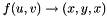
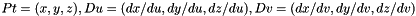
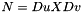

- Generated on Thu Jul 25 2013 17:18:30 for FreeMat by
 1.8.1.1
1.8.1.1
|
FreeMat
|
Section: Visualization Toolkit Common Classes
vtkParametricRandomHills generates a surface covered with randomly placed hills.
For further information about this surface, please consult the technical description "Parametric surfaces" in http://www.vtk.org/documents.php in the "VTK Technical Documents" section in the VTk.org web pages.
.SECTION Thanks Andrew Maclean a.maclean@cas.edu.au for creating and contributing the class.
To create an instance of class vtkParametricRandomHills, simply invoke its constructor as follows
obj = vtkParametricRandomHills
The class vtkParametricRandomHills has several methods that can be used. They are listed below. Note that the documentation is translated automatically from the VTK sources, and may not be completely intelligible. When in doubt, consult the VTK website. In the methods listed below, obj is an instance of the vtkParametricRandomHills class.
string = obj.GetClassName () int = obj.IsA (string name) vtkParametricRandomHills = obj.NewInstance () vtkParametricRandomHills = obj.SafeDownCast (vtkObject o) int = obj.GetDimension () - Construct a surface of random hills with the following parameters: MinimumU = -10, MaximumU = 10, MinimumV = -10, MaximumV = 10, JoinU = 0, JoinV = 0, TwistU = 0, TwistV = 0; ClockwiseOrdering = 1, DerivativesAvailable = 0, Number of hills = 30, Variance of the hills 2.5 in both x- and y- directions, Scaling factor for the variances 1/3 in both x- and y- directions, Amplitude of each hill = 1, Scaling factor for the amplitude = 1/3, RandomSeed = 1, AllowRandomGeneration = 1. obj.SetNumberOfHills (int ) - Set/Get the number of hills. Default is 30. int = obj.GetNumberOfHills () - Set/Get the number of hills. Default is 30. obj.SetHillXVariance (double ) - Set/Get the hill variance in the x-direction. Default is 2.5. double = obj.GetHillXVariance () - Set/Get the hill variance in the x-direction. Default is 2.5. obj.SetHillYVariance (double ) - Set/Get the hill variance in the y-direction. Default is 2.5. double = obj.GetHillYVariance () - Set/Get the hill variance in the y-direction. Default is 2.5. obj.SetHillAmplitude (double ) - Set/Get the hill amplitude (height). Default is 2. double = obj.GetHillAmplitude () - Set/Get the hill amplitude (height). Default is 2. obj.SetRandomSeed (int ) - Set/Get the Seed for the random number generator, a value of 1 will initialize the random number generator, a negative value will initialize it with the system time. Default is 1. int = obj.GetRandomSeed () - Set/Get the Seed for the random number generator, a value of 1 will initialize the random number generator, a negative value will initialize it with the system time. Default is 1. obj.SetAllowRandomGeneration (int ) - Set/Get the random generation flag. A value of 0 will disable the generation of random hills on the surface. This allows a reproducible shape to be generated. Any other value means that the generation of the hills will be done randomly. Default is 1. int = obj.GetAllowRandomGeneration () - Set/Get the random generation flag. A value of 0 will disable the generation of random hills on the surface. This allows a reproducible shape to be generated. Any other value means that the generation of the hills will be done randomly. Default is 1. obj.AllowRandomGenerationOn () - Set/Get the random generation flag. A value of 0 will disable the generation of random hills on the surface. This allows a reproducible shape to be generated. Any other value means that the generation of the hills will be done randomly. Default is 1. obj.AllowRandomGenerationOff () - Set/Get the random generation flag. A value of 0 will disable the generation of random hills on the surface. This allows a reproducible shape to be generated. Any other value means that the generation of the hills will be done randomly. Default is 1. obj.SetXVarianceScaleFactor (double ) - Set/Get the scaling factor for the variance in the x-direction. Default is 1/3. double = obj.GetXVarianceScaleFactor () - Set/Get the scaling factor for the variance in the x-direction. Default is 1/3. obj.SetYVarianceScaleFactor (double ) - Set/Get the scaling factor for the variance in the y-direction. Default is 1/3. double = obj.GetYVarianceScaleFactor () - Set/Get the scaling factor for the variance in the y-direction. Default is 1/3. obj.SetAmplitudeScaleFactor (double ) - Set/Get the scaling factor for the amplitude. Default is 1/3. double = obj.GetAmplitudeScaleFactor () - Set/Get the scaling factor for the amplitude. Default is 1/3. obj.GenerateTheHills (void ) - Generate the centers of the hills, their standard deviations and their amplitudes. This function creates a series of vectors representing the u, v coordinates of each hill, its variance in the u, v directions and the amplitude.
NOTE: This function must be called whenever any of the parameters are changed.
obj.Evaluate (double uvw[3], double Pt[3], double Duvw[9]) - Construct a terrain consisting of randomly placed hills on a surface.
It is assumed that the function GenerateTheHills() has been executed to build the vectors of coordinates required to generate the point Pt. Pt represents the sum of all the amplitudes over the space.
This function performs the mapping , returning it as Pt. It also returns the partial derivatives Du and Dv.  . Then the normal is  .
double = obj.EvaluateScalar (double uvw[3], double Pt[3], double Duvw[9]) - Calculate a user defined scalar using one or all of uvw, Pt, Duvw.
uvw are the parameters with Pt being the the Cartesian point, Duvw are the derivatives of this point with respect to u, v and w. Pt, Duvw are obtained from Evaluate().
This function is only called if the ScalarMode has the value vtkParametricFunctionSource::SCALAR_FUNCTION_DEFINED
If the user does not need to calculate a scalar, then the instantiated function should return zero.
1.8.1.1